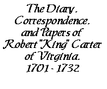

A Collection Transcribed
and Digitized
by Edmund Berkeley, Jr.
List of Letters
|
About This Collection
Electronic Text Center
, University of Virginia Library
Summary
Letter from Robert Carter to Governor [William Gooch,] April 4, 1729
Robert Carter writes to Governor [William Gooch,] April 4, 1729, to alert him that the Rappahannock
will soon sail for Liverpool should the governor wish to send dispatches by her.
Letter from Robert Carter to Governor [William Gooch,
] April 4, 1729
-1
-
[Corotoman, Lancaster County, Virginia]
Apl: 4th 1729
To the Govertnor
May it please your Honr:
In the Absence of my Son Robert
think it my
duty to give y r
Honour an Accot: that we are in daily Expectation
of a Ships Coming down to Clear out her name is the Rapp a
:
Hugh Brackhell master bound to Liverpool her loading
has been in for some time If your Honour designs any di [s]
patches by her the bearer will take Care of them Or if you
please to send them down to the mouth of Queens Creek
the
Overseer there will have Orders to bring them over York
river and from thence they will immediately be sent to me
Your Commds will be punctually obeyed
by
Sir
your Honour's
Most obliged &
Most humble Servant
NOTES
Source copy consulted:
Letter book, 1728 August-1731 July, Robert Carter Papers (acc. no. 3807), Albert and Shirley Small Special Collections Library, University of Virginia.
The name of Carter's home, "Corotoman," the county, and colony have been added for clarity to this unheaded draft.
[1] There were several vessels with the name Rappahannock
. Carter's letters mention a Captain Hugh Brackhill in 1728-1729, and Captain Loxum in 1733. ( Adm. 68/194, ff.30, found in the microfilms of the Virginia Colonial Records Project, Albert and Shirley Small Special Collections Library, University of Virginia.
)
[2] "Queen's Creek is located in York County in the Virginia Peninsula area of the Hampton Roads region of southeastern Virginia in the United States. From a point of origin near the Waller Mill Reservoir in western York County it flows northeasterly across the northern half of the Peninsula as a tributary of the York River." ( "Queen's Creek"
in Wikipedia.
)
This text, originally posted in 2005, was revised February10 , 2015, to strengthen the footnotes and the modern language version text.